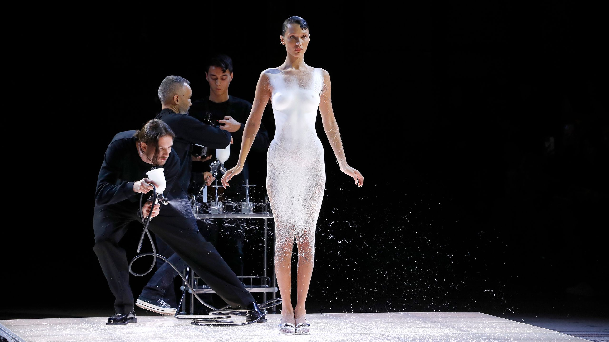

À LA UNE

Coperni met fin à ses activités
Un conflit interminable avec Tomorrow Ltd a poussé Coperni à cesser ses activités.
Lire l'articleVersace : Pieter Mulier prêt à faire renaître la légende
Nouvelle direction créative, retour d’Atelier Versace et repositionnement stratégique : la maison italienne ouvre un nouveau chapitre de son histoire. Nommé à la tête de la création, Pieter Mulier dévoilera sa première collection début 2027, à l’occasion du grand retour de Versace sur le calendrier de la haute couture parisienne, après plus de dix ans d’absence.
Lire l'article
Hermès : quand l'excellence artisanale rencontre la haute couture
C’est une première historique pour la maison française. En janvier 2027, Hermès fera son entrée dans l’univers de la haute couture parisienne avec une collection inédite imaginée par Nadège Vanhée.
Lire l'article2. Titre de la deuxième partie
Paragraphe d'introduction de la deuxième partie avec un autre lien vers le second terme.
Autre paragraphe.
3. Titre de la troisième partie
Paragraphe de conclusion ou d'ouverture.